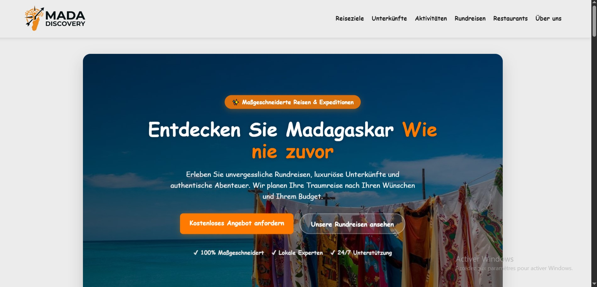

01 / Contexte & Enjeu
Ce qu'il fallait résoudre.
Présenter une offre touristique riche et attractive sans surcharger la lecture, tout en offrant un parcours fluide sur mobile comme sur ordinateur.
Tourisme
Une immersion visuelle et ergonomique conçue pour valoriser une destination et capter l'attention des voyageurs.

01 / Contexte & Enjeu
Présenter une offre touristique riche et attractive sans surcharger la lecture, tout en offrant un parcours fluide sur mobile comme sur ordinateur.
02 / Approche & Exécution
Nous avons structuré une hiérarchie visuelle claire, soigné les contrastes et les temps de chargement, et intégré des transitions mesurées pour guider le visiteur naturellement vers l'action.
Livrables & Axes clés
Mise en valeur des visuels et d'une typographie lisible sur tous les écrans.
Navigation fluide, espacements adaptés et appels à l'action accessibles.
Code léger, animations maîtrisées et chargement rapide des contenus.
Envie d'un résultat à votre image ?
Partagez vos objectifs et vos besoins pour recevoir une proposition sur mesure adaptée à votre activité.